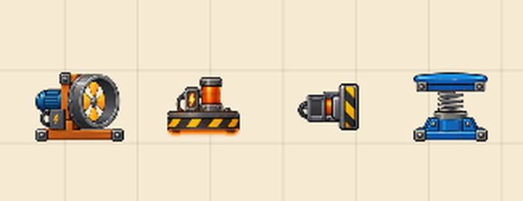
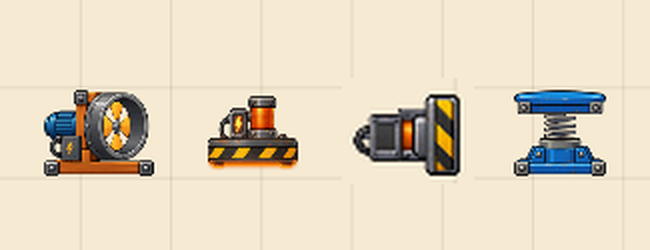

Reprise du 5 octobre — propositions à valider
Maquettes des choix visuels de todo.05.10.md. Rien ici n’est implémenté tant
que l’auteur n’a pas choisi. Les éléments déjà corrigés (poignée de rotation au coin, fil
qui suit le curseur, accroche du piston) sont en captures dans
captures/reprise-05-10/.
1. Barre de chargement du splash
Le bas de l’image réelle, à l’échelle 1 ; la disposition validée (barre et crédit centrés en bas) ne change pas. Le panneau sombre translucide actuel fait « interface système » posée sur une illustration chaleureuse : les trois pistes le retirent.
Panneau sombre, barre dorée.
Planche de bois boulonnée, comme le logo ; remplissage ambre.
Barre fine seule, liseré crème ; l’illustration reste entière.
Le tapis à chevrons du jeu, qui défile en se remplissant.
2. Style des poignées de rotation et de taille
Position déjà corrigée dans l’application : rotation hors du coin supérieur gauche, taille au milieu du bord droit, même diamètre (28 px, cible 44 px). Reste le style. À l’échelle 2.
Disque blanc, liseré et pictogramme bleus, contour de sélection bleu.
Bleu nuit et pictogramme ambre, comme les boutons de la barre du haut ; sélection en pointillés nuit.
Disque bleu, pictogramme blanc (le style de la maquette C4 validée), liseré blanc pour se détacher des sprites.
Pastille ambre cerclée de brun, dans la matière de l’atelier ; plus discrète sur le papier, moins lisible sur les poutres.
3. Tailles des objets
Les quatre appareils cités, côte à côte dans l’atelier au cadrage par défaut. Le piston est le seul qui détonne : son boîtier fait la moitié de la hauteur des trois autres.

Ventilateur, électroaimant, piston, tremplin.

Piston agrandi de 40 % (photomontage) ; les trois autres inchangés.
| Objet | Emprise actuelle (unités) | Proposition |
|---|---|---|
| Ventilateur | 1,20 × 0,94 | inchangé |
| Tremplin | 1,00 × 0,93 | inchangé |
| Électroaimant | 1,00 × 0,80 | inchangé |
| Piston | 1,25 × 0,64 (boîtier 0,78 × 0,43) | × 1,4 → 1,75 × 0,90 (boîtier 1,09 × 0,60), course 0,41 → 0,58 |
Conséquence : le piston de tuto-7 grossit aussi ; sa solution est rejouée par
les tests et le niveau sera retouché si elle ne passe plus.
4. Cadrage à l’ouverture d’un niveau
Le fichier contient déjà un rectangle de scène, et c’est lui qui fixe le zoom initial ; mais
l’atelier le laisse toujours à 16 × 9, même quand le niveau n’en occupe qu’un coin. Exemple
: tuto-6 sur un téléphone en portrait.
Toute la scène 16 × 9 : la machine tient dans un timbre-poste.
Même niveau, zoom initial sur la zone utile ; « Ajuster » y revient, le dézoom montre toujours le reste.
| Option | Principe | Format de fichier |
|---|---|---|
| A — Automatique conseillée | À l’ouverture, cadrer sur les objets du niveau et ceux de la solution, avec une marge et un minimum de 8 × 5,5. Rien à faire pour l’auteur ; vaut aussi pour les niveaux et liens déjà partagés. | Inchangé. |
| B — Vue de l’auteur | À l’enregistrement, noter dans le fichier la zone visible à l’écran de l’auteur ; elle sert de cadrage à l’ouverture. Maîtrise totale, mais il faut penser à bien cadrer avant d’enregistrer. | Nouveau champ optionnel, ADR et tests de migration. |
| C — Scène resserrée | À l’enregistrement, réduire la scène elle-même autour de la machine. Change aussi les limites du jeu (sortie de scène, zone de pose). | Inchangé, mais règles du niveau modifiées. |
5. Catalogue par catégories (section 3 du todo)
Quatre groupes, et une description par objet réécrite sur le même modèle.
Ce qui bouge
- Balle
- Roule, tombe et rebondit.
- Masse
- Un poids de 10 kg pour appuyer ou faire basculer.
- Caisse en bois
- Une caisse à pousser ou à transporter.
- Caisse métallique
- Une caisse que l’électroaimant attire.
Structures
- Poutre
- Un support fixe, en trois longueurs.
- Bascule
- Une planche qui pivote sous le poids.
- Tremplin
- Fait rebondir ce qui tombe dessus.
Appareils
- Convoyeur
- Un tapis roulant, vers la gauche ou la droite.
- Ventilateur
- Souffle devant lui quand il est en marche.
- Électroaimant
- Attire les caisses métalliques quand il est en marche.
- Piston
- Pousse d’un coup ce qui est devant lui.
- Barrière
- Une barre qui s’ouvre ou se ferme sur commande.
Commandes
- Levier
- Trois positions pour commander un appareil.
- Bouton
- Actif tant qu’un objet appuie dessus.
- Minuteur
- Retarde le signal de quelques secondes.
- Fil de commande
- Relie une commande à un appareil.